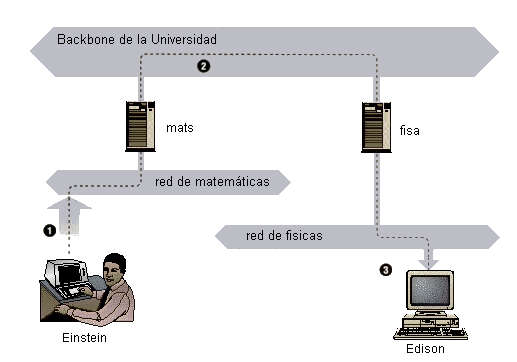
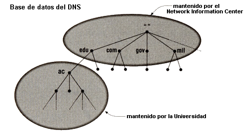
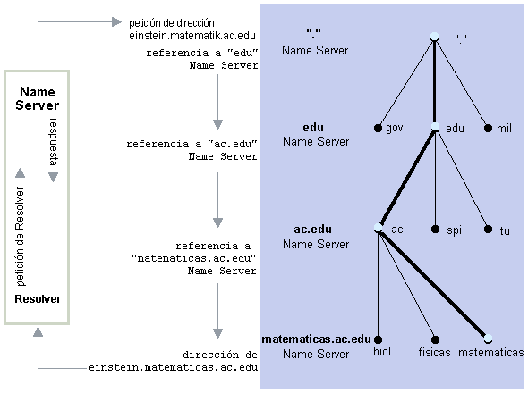
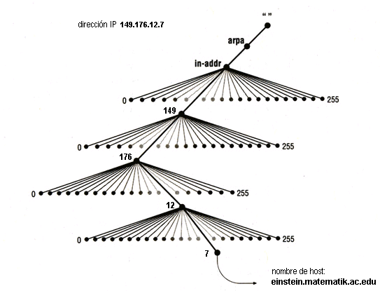
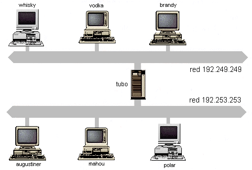

![[LinuxFocus Image]](../../common/May1998/border-short.jpg)
| News Archives Companies Tips |
Introducción al DNSby Andreas J GundackerEste artículo se dirige a todos los
que están interesados en el tema de las redes informáticas
mundiales como la Internet y el World Wide Web (WWW). Sobre
aquellas personas que desean saber más sobre su funcionamiento. Este artículo apareció por primera vez en el
Linux Magazine. |
|
La reseña es dividida en cinco secciones: La primera le explica en
palabras breves lo que significa la Internet y como se
desarrolló. 1 La ARPANET, el origen de la World Wide Web 2 Comprendiendo algunas expresiones técnicas 3 El TCP/IP 3.1 El IP y la IP 3.2 El TCP (Transmission Control Protocol) 4 El Sistema de Dominio de Nombres (DNS: Domain Name System) 4.1 Un resumen del sistema 4.2 ¿Por qué se necesita el DNS? 5 La Instalación de un Servidor de Dominio de Nombres 5.1 Archivos de base de datos (database files) 5.2 Ressource records 5.3 Los archivos completos para nuestro dominio ficticio 5.4 Abreviaciones 5.5 La Librería de Resolver 5.6 Probando su setup con nslookup (1) La ARPANET, el origen de la World Wide Web La "Internet" significa todas las redes informáticas interconectadas las cuales resultaron de la ARPANET. La ARPANET nació en el año 1969 de un proyecto de investigación de la DARPA (Defense Advanced Research Project Agency) americana. Cuando la ARPANET salió del estado experimental, se desarrollaron los protocolos básicos del TCP IP, los cuales fueron nominados al estándar militar (Military Standard) y todas las instituciones que formaban parte de la ARPANET tuvieron que adaptarse a los nuevos protocolos. Para simplificar este cambio, la DARPA encargó a la empresa Bolt, Beranek &Newman (BBN) para la integración de TCP IP en el sistema Berkley-Unix (BSD). Es por eso que TCP IP y el sistema de operación UNIX se fusionaron. En el año 1983 La ARPANET fue separada. De ella resultaron La MILNET como parte de la Defense Data Network (DDN) y otra ARPANET mas pequeña. El conjunto consistiendo de la MILNET y la ARPANET se dominaba la INTERNET. En el año 1990 desapareció la ARPANET abriendo el paso a la Internet, que abarca una gran cantidad de redes en todo el mundo.
(2) Un par de expresiones importantes Imagínese que usted esta sentado delante de una computadora que forma parte de una red local (local area network = LAN) del instituto de matemáticas de su universidad (Figura 1). La LAN de matemáticas es conectada vía el backbone (nodo principal) con la LAN del instituto de físicas la cual se encuentra en otro edificio. Usted desea mandar datos a un amigo que esta trabajando en el instituto de físicas. Es importante saber, que su computadora y la de su amigo tienen nombres inequívocos en la red de la universidad (igual que todas las computadoras en la Internet). Por ejemplo la suya se llama Einstein, la de su amigo se llama Edison. Para que las dos redes físicamente independientes puedan comunicarse, necesitan un gateway. Un gateway es una computadora, que es capaz de unir redes físicamente independientes. En este caso necesitamos dos gateways - uno para la red local de matemáticas y una para la red de los físicos. En adelante llamamos el gateway de matemáticas "mats" y el de físicas "fisa".  Como el software (rlogin, telnet, ftp etc.) de Einstein no puede mandar datos (paquetes de datos) directamente a Edison, la cual se encuentra en una red físicamente independiente, tiene que confiar en un gateway que transporta los paquetes al destino correspondiente. Es decir que el gateway "mats" dirige los paquetes al gateway "fisa", que tiene la misma función para la red de los físicos. La transferencia pasa vía el backbone de la universidad y "fisa" entrega los datos finalmente a Edison. Este esquema de transmisión de datos a un host lejano (computadora de una red) se llama Routing y los datos o paquetes de datos son designados datagrams. Los datagrams como unidades mas pequeñas de la transmisión de datos son intercambiados por un protocolo - el Internet Protocol (el IP), que es completamente independiente del hardware. De este modo llegamos a la ventaja principal del protocolo IP, que consiste en reunir redes físicamente separadas en una red aparentemente homogénea. Las funciones principales del IP:
Pero por otra parte el IP no dispone de informaciones de control de la transmisión (handshake), es decir, que el IP transporta paquetes de un lugar a otro sin el debido control de que se recibieron todos los paquetes en el orden correcto. Este problema lo trataremos más adelante. Ahora tenemos una idea sobre el software de la transmisión (Routing). Recordemos que nuestra computadora tiene el nombre Einstein. Las computadoras de redes reciben nombres porque son mas fáciles de recordar que una secuencia de cifras. El IP tiene un esquema de dirección independiente del hardware. Esto se consigue asignando una cifra única de 32 bits a un host; la dirección-IP (la IP). La dirección IP es representada por cuatro cifras decimales (octetos) separadas por puntos. Einstein por ejemplo, podría tener la dirección de hardware 0x952C0C02, la cual aparecería de la forma 149.176.12.7 . En este punto habrá comprendido que tenemos tres direcciones distintas:
La dirección de la tarjeta de Ethernet ocupa un puerto en el sistema operativo, usualmente es eth0-n bajo Linux. Puertos seriales p. ej. llevan el nombre cua0-n o ttyS0-n. Para ser exacto no se debería decir que su computadora o el host tiene el nombre Einstein, sino que se refiere al interfaz de hardware correspondiente. Usted sabe ahora que el Internet Protocol (el IP) transmite datos entre computadoras en forma de datagrams. Cada datagram es transmitido a la dirección en la Internet u otra red local, que se indica en el cabezal del datagram. La dirección de destinatario es una dirección estándar (la IP) de 32 Bits y contiene información suficiente para identificar inequívocamente una computadora de una red. Una dirección IP consiste de dos partes:
Dependiendo del tamaño de la red resulta el número de las
direcciones de host. Para cumplir estas diferentes exigencias, se
ha creado diferentes clases de redes, que definen separaciones de
dirección IP diferentes.
Regresando a nuestro ejemplo, Ud. puede ver que Einstein con la IP 149.176.12.7 forma parte de una red de la clase B: 149.176.0.0 y precisa la computadora host 12.7. Es importante saber, que la dirección de host no debe tener el 0 ni el 225, como están reservados para objetivos especiales. La dirección de host , consistiendo solo de ceros identifica la red misma (149.176. 0.0). Si las cifras de host sólo consisten de 255 (149.176.255.255) se habla de una dirección broadcast (radio), ya que los datos, que son mandados a esta dirección, son recibidos de todas las computadoras en la red 149.176.0.0. Al mismo tiempo existen dos direcciones de red reservadas: 0.0.0.0, que se llama default route y 127.0.0.0 que es la dirección-loopback. La default route tiene que ver con la manera como IP realiza el routing de los datagrams (apunte: masquerading). Mas importante por ahora es la red 127.0.0.0, la cual es
reservada para el tráfico de IP, que tiene lugar en su
computadora. La IP 127.0.0.1 se dirige usualmente a un interfaz
en su computadora que se llama interfaz de loopback, lo que
funciona como un círculo cerrado. Cada paquete mandado allí, es
devuelto inmediatamente. De este modo el loopback sirve para
probar el software de red sin estar obligado usar una red
"real". La IP que Ud. va a tener al final es decidido por una institución central que se llama NIC (Network Information Center). La mejor solución es encargar su proveedor con la reservación de la dirección IP. Si Ud. está seguro que su red nunca será conectada a la Internet, puede elegir una IP cualquiera. Pero para estar seguro que ningún paquete de datos escape a la Internet, conviene usar IPs que sólo son válidos dentro de su red privada y no pueden ser transferidos entre Sistemas de Internet. Estas direcciones son:
Sin embargo es posible instalar un gateway para la Internet, es decir, que la dirección externa del gateway es conocida dentro de la Internet, pero las computadoras dentro de su red normalmente no las pueden accesar, porque sus IPs no son transmitidos en la Internet. Los hosts de su red por otro lado tendrán acceso a la WWW (World Wide Web).
(3.2) El TCP (Transmission Control Protocol) Como fue mencionado antes, el Internet Protocol no dispone de control de la transmisión, de esto se ocupa el TCP. El TCP es un protocolo de flujo de datos (byte stream), confiable y orientado a la conexión.
Debido a esto el TCP se ocupa del orden correcto de los datos.
(4) El Sistema de Dominio de Nombres (DNS: Domain Name System) El Sistema de Dominio de Nombres (DNS) es básicamente una base de datos distribuida de computadoras que forman parte de una red. Esto facilita el control local de la totalidad de segmentos de la base de datos, lo que permite, que cada segmento esté disponible a través de la red por un esquema de cliente-servidor (client server). El Servidor de Nombres (name server) es un programa que forma la parte servidor del mecanismo cliente-servidor del DNS. Los Servidores de Nombres contienen información sobre un determinado segmento de la base de datos y la hace disponible para clientes (clients), denominados Resolver. Los Resolvers muchas veces consisten sólo en rutinas de librerías, que crean interrogaciones y las mandan a través de la red a un Servidor de Nombre. La estructura de la base de datos del DNS es mostrada en figura 2. La totalidad de la base de datos se muestra como un árbol (tree) invertido con la raíz (root) en la punta. El nombre de la raíz es la etiqueta NULL, pero se escribe con un solo punto ("."). Cada nudo del árbol representa tanto una partición de la totalidad de la base de datos, como un Dominio (domain) del Sistema de Dominio de Nombre. En adelante cada dominio puede ser dividido en particiones que se llaman Subdominios (subdomains), que son derivados como niños de sus nudos paternales.
Cada dominio es marcado de modo que tiene una etiqueta que le identifica relativamente con su dominio paternal. El dominio posee también un nombre de dominio (domain name), que identifica su posición en la base de datos, tal como una ruta absoluta de un directorio especifica su lugar en el sistema de archivos de su computadora. En el DNS, el nombre de dominio completo es una secuencia de etiquetas, empezando por el dominio hasta la raíz (root), separando las etiquetas por puntos "." (p. ej: einstein.matematicas.ac.edu). Permitiendo que cada dominio puede ser administrado por una organización diferente. Cada organización puede dividir su dominio en varios subdominios, cuya administración puede ser realizada por otras organizaciones. El Network Information Center p. ej. administra
el dominio "edu" (educational) pero pasa la autoridad
sobre el subdominio "ac.edu" (academic) a la
Universidad, la cual autoriza al instituto de matemáticas para
administrar el siguiente subdominio: "físicas.ac.edu"
(Figura 3). 
Finalmente queda mencionar que un dominio puede contener tanto subdominios como hosts. Cada host en una red tiene un Nombre de Dominio que posee la información sobre el host, así como la dirección IP o como va el Routing de correo, etc. Un host también puede tener uno o mas Aliases de Dominio de Nombre, que son simplemente un indicador de un nombre de dominio (el alias) para el nombre oficial (canonical domain name). Un ejemplo: si su esposa se llama Maria Elizabeth, en algunos momentos la llamará Maria y en otros Elizabeth. Aunque utilice nombres diferentes se refiere a la misma persona. Las organizaciones de un dominio son libres de elegir nombres dentro de su dominio. No importa cual nombre sea usado, es seguro que no causa conflicto con otro nombre, porque tiene su Nombre de Dominio único adjuntado al final. De este modo pueden existir dos hosts con el nombre Einstein en su Universidad, por ejemplo, paquetes de einstein.fisicas.ac.edu siempre van a encontrar su camino a einstein.matematicas.ac.edu, porque se trata de dominios paternales diferentes.
(4.2) ¿Por qué se necesita el DNS? Para resolver nombres de dominio y direcciones IP y para poder ubicar hosts de redes lejanas. Como fue mencionado antes, es más fácil recordar nombres en vez de cifras. Sobre todo cuando se trata de una cantidad de direcciones tan inmensa como la Internet. Las computadoras por otro lado trabajan perfectamente con cifras como la dirección IP. Lo que sucede cuando usted entra a la Internet colocando una dirección como p. ej. http://www.altavista.com, es que su navegador dirige una petición (request) al Servidor de Dominio de su proveedor y este intenta resolver el nombre de dominio con la IP correspondiente. En el caso que su proveedor no está autorizado para esta zona, transmite la petición (request, query) al servidor de dominio autorizado hasta llegar al dominio que se indicó. (Detallamos una busqueda con la dirección "einstein.matematicas.ac.edu" en la Figura 4).  Esto significa que cada servidor de dominio tiene la información completa de la zona para que esta autorizado y aparte tiene informaciones básicas sobre otras zonas. Cuando una petición (request) se dirige a una zona que esta fuera de la zona autorizada, su servidor por lo menos sabe por donde buscar. Esto puede significar que la petición (request) de una dirección tiene que pasar por varios Servidores de Dominio hasta que usted tenga contacto con el destino solicitado. Aunque usted supiera la dirección IP del detino, es imprescindible consultar otros Servidores de Dominio si su computadora no se encuentra en la misma zona. De este modo es fácil de imaginar porque el Sistema de Dominio de Nombre no puede consistir en una sola base de datos centralizada. Primero tardaría demasiado tiempo encontrar un servidor entre millones de otros y segundo habría una cola bastante larga en el caso de miles de peticiones simultáneas de todo el mundo. Adicionalmente no tendría sentido dirigirse a un servidor lejano para comunicar con un host de la misma zona. Hasta ahora hablamos del mapeo de nombres a direcciones. Pero, que sucede si usted de repente tiene la dirección IP y desee saber el nombre de este dominio. Para solventar este problema fue creado el dominio "in-addr.arpa". (Figura 5) Este dominio es llamado dominio inverso y la resolución de direcciones IPs a nombres de dominio se denomina mapeo reverso (reverse mapping o reverse lookup). El dominio de nombre inverso es creado poniendo las cifras de la IP del orden contrario y añadiendo in-addr.arpa al final. Un ejemplo: Nos recordamos que la IP de Einstein del instituto de matemáticas es "149.176.12.7" con el nombre de dominio "einstein.matematicas.ac.edu". El dominio "matematicas.ac.edu" entonces tendrá el nombre de dominio inverso: "12.176.149.in-addr.arpa" y la computadora einstein.matematicas.ac.edu correspondientemente esta realizada con "7.12.176.149.in-addr.arpa".  Figura 5: El mapeo reverso
(5) La Instalación de un Servidor de Dominio de Nombres para una red local (LAN) con gateway bajo el Sistema Operativo LINUX usando BIND (Berkeley Internet Name Deamon: Demonio de Nombres Internet de Berkeley). Lo siguiente está basado en un supuesto de que usted sabe instalar y configurar tarjetas de red bajo LinuX. Los comandos "ifconfig" y "ping localhost" pueden comprobar una configuración correcta para cada computadora. Ahora nos dedicamos a conectar sus computadoras vía el DNS configurando BIND. Usted tiene que tener instalado el paquete BIND, que contiene named (pronunciado neimdii = el demonio de servidor) en la computadora que trabajará como servidor de dominio. En este capitulo vamos a instalar un dominio ficticio. De este modo usted solo tiene que reemplazar las IPs, los nombres de las computadoras y un par de detalles adicionales de su red. 
Nuestro dominio ficticio es para un mayorista de bebidas. La empresa "Distribuciones Alcomato", especializada en cervezas y licores se ha conformado bajo el nombre de dominio "alcomat.com" después de haber contactado el NIS. Distribuciones Alcomato tiene dos Ethernets con los números de red 192.249.249 y 192.253.253 (Figura 6). Una parte de la tabla de host (hosttable, usualmente el
archivo /etc/hosts) muestra lo siguiente:
(5.1) Archivos de base de datos (database files) La primera etapa será traducir la tabla de host a datos equivalentes de DNS. El DNS consiste de varios archivos: Un archivo proyecta todos los nombres de hosts a direcciones IP. Otros archivos vuelven a proyectar las IPs a nombres de hosts. La búsqueda de direcciones IP a nombres de hosts es llamada reverse mapping (mapeo reverso) y cada red tiene su propio archivo para el mapeo reverso. He llamado el archivo que proyecta nombres a direcciones named.hosts. Los archivos que proyectan las direcciones a hosts los llamé named.249 y named.253 correspondiendo a las dos redes de la empresa ficticia. Usted puede elegir cualquier denominación diferente para estos archivos. Sin embargo los llamaré archivos de base de datos del DNS. Aparte de estos existen dos archivos de datos que son mas o menos iguales para cada servidor. Estos los llamé named.cache y named.local. Para unir todos los archivos de base de datos, el Servidor de Nombres requiere un archivo de inicio – usando BIND, este archivo usualmente es /etc/named.boot. Los archivos de base de datos son específicos para el DNS. El archivo de inicio es específico para la implementación del Servidor de Nombres – en nuestro caso usaremos BIND.
La mayoría de los componentes de estos archivos se llaman DNS ressource records. Según las Referencias de DNS los ressource records tienen el orden siguiente:
Los siguientes records indican datos de hosts en este dominio:
Comentarios: Se les hace leer mas fácil a los archivos del DNS usando comentarios y líneas blancas. Los comentarios empiezan con un punto y coma y terminan al final de la línea. Los Servidores de Nombres ignoran comentarios así como líneas blancas.) SOA record:
El nombre "alcomat.com" debe estar en la primera columna. ¡Es muy importante poner un punto al final de los nombres! Sino, es añadido automáticamente el dominio "alcomat.com", lo que tendría poco sentido. La explicación se la daré cuando tratemos las abreviaciones. El "IN" pone para la Internet. Existen otras clases, pero ninguna es de uso común. El primer nombre después de SOA, augustiner.alcomat.com, es el nombre del Servidor de Nombres para estos datos. El segundo nombre, juan.mahou.alcomat.com, es la dirección de correo de la persona encargada de estos datos (si usted reemplaza el primer punto "." por una @). BIND provee otro tipo de ressource record para este propósito: RP (persona responsable). Los paréntesis permiten que el SOA record se extiende sobre varias líneas. La mayoría de los renglones dentro de los paréntesis sirven para informar Servidores de Nombres secundarios, que no usamos en nuestra red ficticia y probablemente será tratado en la próxima edición. SOA records similares son insertados en los archivos named.249 y named.253. Note que en estos archivos cambiamos el primer nombre del SOA record de alcomat.com al nombre apropiado del dominio in-addr.arpa: 249.249.192.in-addr.arpa. y 253.253.192.in-addr.arpa. NS record:
Estos records indican que existen dos Servidores de Nombres para el dominio "alcomat.com". Los Servidores de Nombres se encuentran en los hosts "augustiner" y "tubo". Hosts como "tubo", (es nuestro gateway) que tienen más que un interfaz de red (multihomed hosts), en nuestro caso dos tarjetas de Ethernet, son elecciones excelentes para un Servidor de Nombres, ya que son bien conectados: Primero son accesibles directamente de hosts de más que una red y en el caso de servir también como Routers no son parados muchas veces ya que son controlados con mucha atención. (are monitored closely). Igual que con los SOA records, añadimos NS records a los archivos named.249 y named.253. Dirección y Alias records:
Los primeros dos bloques no le van a sorprender. La "A" indica dirección (address) y cada ressource record mapea un nombre a una dirección. Tubo actúa como Router y tiene dos direcciones asociados con su nombre y por eso tiene dos ressource records. El tercer bloque contiene la tabla de los aliases. Para los primeros dos aliases creamos "CNAME" (canonical name, fully qualified host name = nombre de host de primera orden) ressource record. Sin embargo, creamos records de dirección para los otros dos aliases. Cuando un Servidor de Nombre busca un nombre y encuentra un CNAME-record correspondiente, reemplaza el nombre con el nombre de host de primera orden y sigue buscando el nuevo nombre. Si por ejemplo el Servidor de Nombres busca "tu", encuentra un record CNAME indicando a "tubo". Después es buscado "tubo" y son retornadas las direcciones 192.249.249.1 y 192.253.253.1. Los últimos dos renglones solventan un problema especial. Supongamos que tenemos un gateway, como "tubo" y usted desea comprobar una de las interfaces. Una solución muy común es, mandar un "ping" al interfaz para verificar que esta respondiendo. Cuando usted manda un "ping tubo", el Servidor de Nombres retornara ambas direcciones. En nuestra tabla no pusimos aliases para tub249 y tub253, porque resultaría en ambas direcciones retornadas cuando el alias es buscado. Para evitarlo usamos únicamente el address record "A" para indentificar las dos interfaces. Para comprobar la operación del interfaz 192.249.249.1 de tubo, mandamos un "ping tub249", ya que se refiere a una sola dirección. Funciona igual con "tub253". Formulemos una regla general para esto:
Dicho aparte, no se los identifica a los usuarios con nombres como tub249 o tub253. Estos sirven únicamente para propósitos de administración de sistema y no son de ningún uso para el usuario.
PTR Records Los siguientes records son los PTR records para la red
192.249.249.
(5.3) Los archivos completos para nuestro dominio ficticio El archivo de tabla de hosts para el dominio alcomat.com
Los archivos named.249 y named.253 para el mapeo de direcciones a nombres de hosts
La dirección loopback
Este archivo contiene las direcciones y nombres de todos los
Servidores de Nombres de Root (root nameservers) de la Internet.
Si usted no piensa conectar su red a la Internet no es necesario
instalarlo. El archivo de inicio: named.boot Lo que finalmente nos hace falta es un archivo que una
nuestros archivos de base de datos, o mejor dicho el Servidor de
Nombres espera un archivo que le muestra donde se ubican los
archivos de base de datos.
Una vez instalado los archivos, usted debe activar el demonio "named" en el archivo de inicio del sistema de modo que se pone vivo automáticamente cuando arranque el sistema.
Hasta ahora creamos archivos muy detallados para facilitar la explicación. Existen varias abreviaciones que son usadas normalmente. El origen La dirección de "mahou" del archivo named.hosts: mahou.alcomat.com. IN A 192.253.253.2 se habría podido escribir: mahou IN A 192.253.253.2 Escribimos lo siguiente en el archivo named.249: 2.249.249.192.in-addr.arpa. IN PTR whisky.alcomat.com. Porque 249.249.192.in-addr.arpa es el origen, habríamos podido escribir: 2 IN PTR whisky.alcomat.com. La notación @ @ IN SOA augustiner.alcomat.com. juan.mahou.alcomat.com. ( 1 ; Serial para updates 10800 ; Refresh after 3 hours 3600 ; Retry after 1 hours 604800 ; Expire after 1 week 86400 ) ; Minimum TTL of 1 week La repetición del nombre anterior tubo IN A 192.253.253.1 IN A 192.249.249.1 Finalmente le presento el archivo named.hosts de la forma abreviada. Resulta buen ejercicio hacer los cambios para los archivos restantes ;-))
La contraparte del Servidor de Nombres es la Librería de Resolver, que consiste en un grupo de funciones perteneciendo a las librerías estándar de "C" bajo LinuX. Las rutinas más importantes del Resolver son:
El archivo más importante es host.conf, que
controla las funciones de su Resolver. Se encuentra en el
directorio /etc y entre otros determina cuales
servicios y en la orden de ellos serán solicitados por el
Resolver.
El archivo /etc/host.conf de nuestro ejemplo le indica al Resolver usar primero el DNS y después la tabla /etc/hosts.
Ya que nuestro Resolver esta usando DNS, le tenemos que
comunicar cual Servidor de Nombres consultar. Para cumplir esto,
existe el archivo: resolv.conf.
(5.6) Probando su setup con nslookup Antes de usar la herramienta nslookup, que trae BIND, vamos a investigar si existen errores de syslog. Si usted ha configurado el archivo inicial de modo que "named" arranca automáticamente durante el inicio del sistema, sale un mensaje de "named" esta activo. En el caso de que usted prefiera arancar "named" manualmente, use el comando siguiente: # /etc/named -b /etc/named.boot (sólo root puede realizarlo)
Si ha ocurrido algun error, aparecen mensajes como p. ej. Después de corregir los errores, use el comando
Las pruebas usando nslookup Con nslookup se puede buscar cualquier tipo de ressource record y puede ser dirigido a cualquier Servidor de Nombres. Aqui vamos a tratar solo las pruebas elementales. Búsquedas locales:
Si las dos pruebas funcionan de la manera mostrada, su Servidor de Nombres trabaja correctamente para su dominio. Búsquedas de hosts lejanos:
Si esta prueba funciona, su Servidor de Nombres puede ubicar los Servidores de Nombres de root (archivo: named.cache) y como contactarlos para solicitar informaciones sobre hosts lejanos. |
- TCP/IP Network
Administration: Craig Hunt; O´Reilley; 1992
- DNS and BIND: Paul Albitz & Cricket Liu; O´Reilley; 1997
- LINUX Network Administrator´s Guide: Olaf Kirch; O´Reilley; 1995
- Proyecto Web: Jon Udell, BYTE, Diciembre
1997
es Licenciado en Empresariales alemán con afición a la Tecnología de Información.
LinuX le ha ayudado en realizar sus estudios particulares de redes informáticos.
Cuando terminó este articulo pasaba un programa de aprendizaje en Klöckner Moeller-Somerinca Caracas/Venezuela.
This website is mantained by Miguel A Sepulveda.